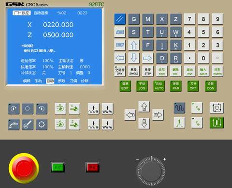
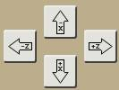
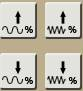

| GSK928TC操作面板操作 |
机床操作面板位于窗口的右下侧，如下图所示。主要用于控制机床的运动和选择机床运行状态，由模式选择旋钮、数控程序运行控制开关等多个部分组成，每一部分的详细说明如下：

方式选择
EDIT: 用于直接通过操作面板输入数控程序和编辑程序。
AUTO：进入自动加工模式。
JOG：手动方式，手动连续移动台面或者刀具。
PAR:机床参数设置。
OFT：刀补及刀偏。
DGN：故障及报警诊断。
置光标于按钮上，点击鼠标左键，选择模式。
数控程序运行控制开关
?单程序段
?空运行
?手轮X轴选择
?手轮Z轴选择
机床主轴手动控制开关
?手动开机床主轴正转
?手动关机床主轴
?手动开机床主轴反转
辅助功能按钮
?冷却液
?换刀具
手轮进给量控制按钮
选择手动台面时每一步的距离：0.001毫米、0.01毫米、0.1毫米、1毫米。置光标于旋钮上，点击鼠标左键选择。
程序运行控制开关
?循环停止
?循环启动
系统控制开关
?NC启动
?NC停止
手动移动机床台面按钮

?选择移动轴,正方向移动按钮,负方向移动按钮。 快速进给升降速按钮

主轴升降速/快速进给升降速紧急停止按钮 手轮